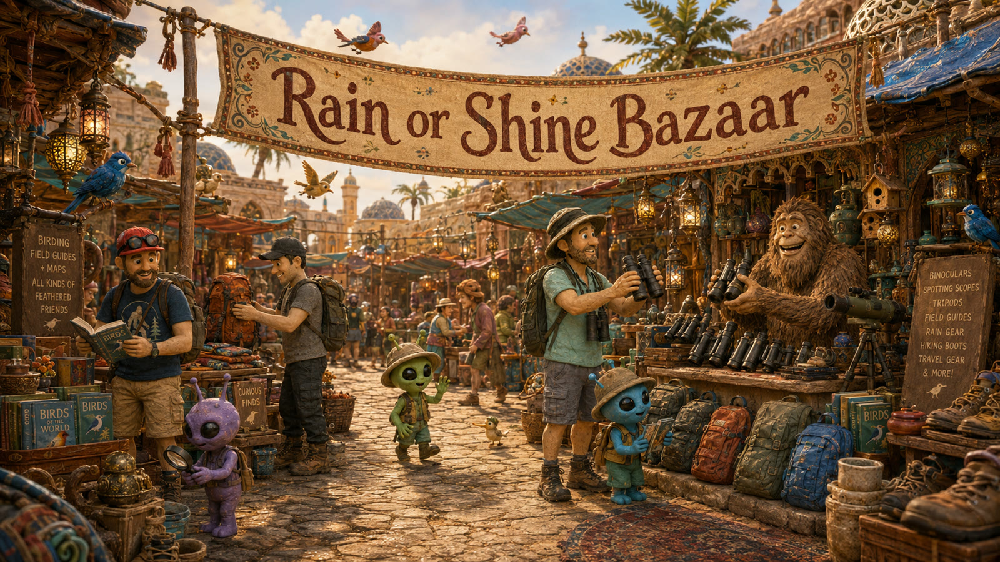

The market is resting
Rain or Shine Bazaar
The Bazaar is switched off for now. The birding dashboard is still right where you left it.
Return to the dashboardPrivate flock access
The Bazaar opens for the Rain or Shine trio.
Sign in from the birding dashboard with your magic link, then come back through its Bazaar entrance.
Go to team sign-inChecking your field pass...
Rain or Shine Bazaar

A small field market
Useful things for curious outings
Browse a calm preview of trail gear, field tools, and team whimsy. Your birding records are never read or changed here.
12 preview finds
Watch, Want, Maybe, and Pass choices stay on this device.
No finds match those field notes yet.